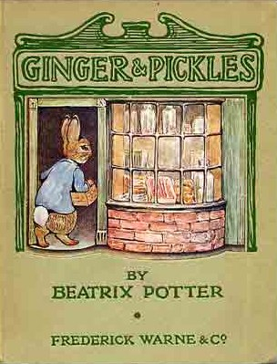
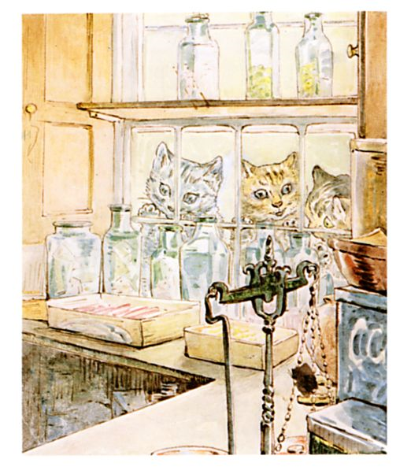
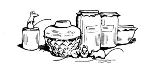
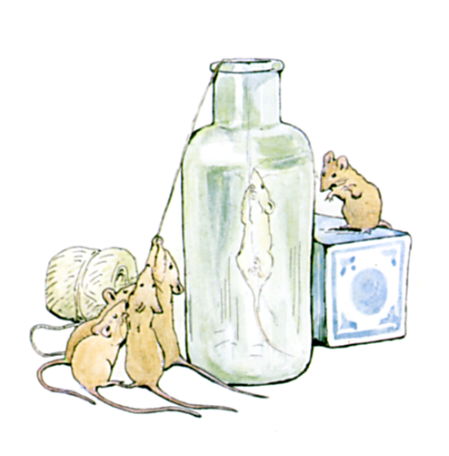
「ヤマネに描いてもかまわんよ」として下さった
（３年寝たきりでも文句ひとつない）
ジョン・テイラーおじいさんに心からささげます
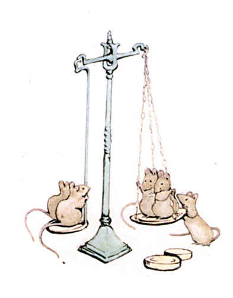
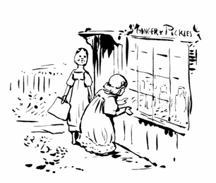
むかしむかし あるむらに おみせが １けん ありました。 まどのうえに かかげられた なまえは 〈ジンジャー＆ピクルス〉。
それは ちっちゃな ちいさな おみせで、 ちょうど おにんぎょうに ぴったりの おおきさ ―― ですから リュシンダと かぽうぎジェーンは いつも 〈ジンジャー＆ピクルス〉で こまごましたものを かいこんでいました。
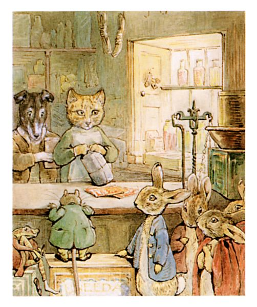
なかの カウンターは ウサギの とどく たかさ。 ジンジャー＆ピクルスでは あかみずたまの ハンカチが どうか１まいと せいどうか３まいで うられています。
ほかにも おさとうや かぎタバコ あまぐつなども あつかっていて。
なんと こんなに ちいさい おみせなのに、 ほとんどなんでもが かえるのです ―― あわてて ほしくなるようなものは ないことも ありますけど ―― たとえば くつひもとか ヘアピンとか マトンチョップとか。
ジンジャー＆ピクルスとは おみせを いとなんでいる ふたりの おなまえです。
ジンジャーは ちゃトラの オスねこで、 ピクルスは テリアいぬ。
ピクルスは いつも あなウサギたちに ちょっと こわがられていました。
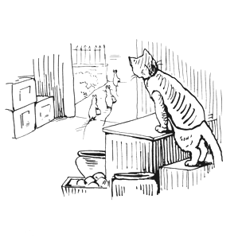
おみせの ひいきには ハツカネズミも いたのですが ―― そのこたちだけ ジンジャーを どうも こわがっていて。
というわけで ハツカネズミの あいては たいてい ピクルスに まかされます。 いわく よだれが でてしまうから って。
「がまんできねえんだ。 こつづみ かかえて ドアから でていく やつらを みるだけで もう。」
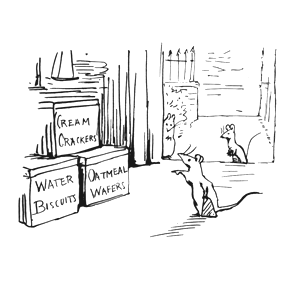
「わたしも クマネズミあいてだと おなじ きもちに。」と ピクルス。「でもまあ うちの おきゃくを じぶんで くうなんて あっちゃいけない。 ここへは ちかよらず ぐいぐいタビサのところへ いってしまう。」
「むしろ どこにも いけなくなるんじゃねえの。」と ジンジャーの へんじは おもくるしい。
（ぐいぐいタビサは むらに もうひとつだけある おみせの あるじ。 そっちは ツケが きかないのです。）
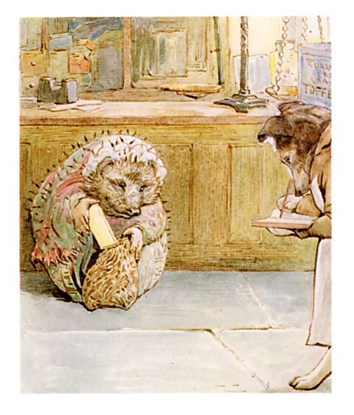
ジンジャー＆ピクルスでは どこまでも ツケが ききました。
そもそも 〈ツケ〉というのは こういうこと ―― おきゃくさんが せっけん ひとつを かったとして、 そのとき おきゃくさんが さいふを とりだして おしはらいを するかわりに、 また こんど しはらうよ と いっておく。
すると ピクルスは ふかぶか おじぎして、「いいですとも おくさん。」 そして ちょうぼに そのことを かきつけておくのです。
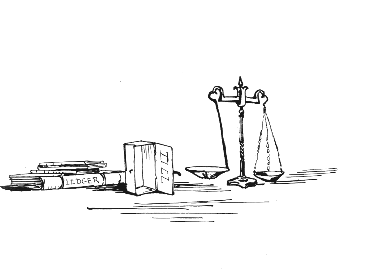
おきゃくさんは くりかえし やってきては たくさん かいこんでいきました。 ジンジャーと ピクルスが こわくても それでも。
ただし その〈こんど〉の おしはらいが いつまで たっても きません。
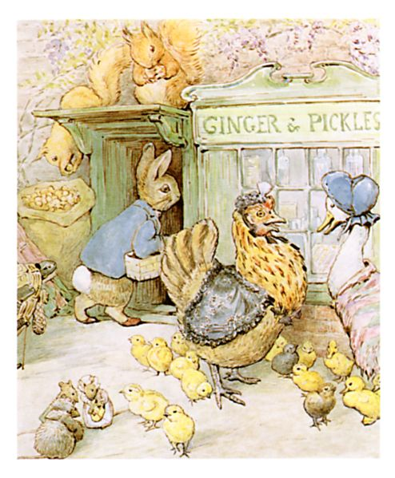
おきゃくさんは まいにち おおいりで、 キャラメルが とくに たくさん うれていきます。 なのに いつも おしはらいが ありません。 どうか１まいで かえる ペパーミントぽっちにも しはらってくれないのです。
とはいえ うりあげじたいは かなりのもので、 ぐいぐいタビサの １０ばいは ありました。
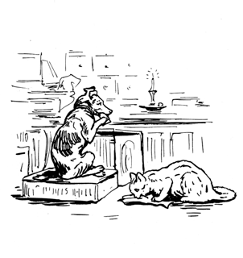
ずっと おしはらいが ないので、 ジンジャーと ピクルスは うりものに てを つけて たべるしかありません。
ピクルスは ビスケットを たべ、 ジンジャーは タラのひものを くちに しました。
ふたりは みせを しめたあと ろうそくの あかりだけで たべるのです。
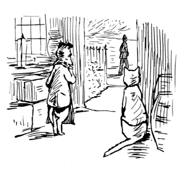
１がつ１たちに なっても おしはらいが ないので、 ピクルスは いぬのライセンスを てにいれるのも ままなりません。
「まったく こまったもんさ、 もう おまわりが こわくって。」と ぼやく ピクルス。
「そんなの てめえが テリアのせいだろ、 『こっち』は ライセンスなんて いらないし、 コリーいぬの ケップだって いらねえのに。」
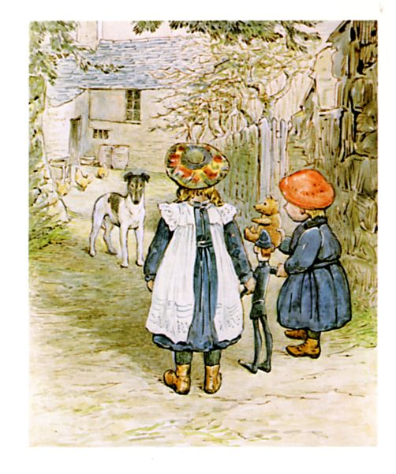
「ああ おちつかないったら、 よびだしを くらうかと ひやひやする。 ゆうびんきょくで ツケで ライセンスを もらおうとしてみたんだけど、 ダメだった。」と ピクルス。「あのあたりは おまわりで いっぱい。 かえりしなにも ひとりに でくわしたし。
ひげひげサミュエルに もう１ど おかんじょうを おくってみよう、 ねえ ジンジャー、 ベーコンの ツケが はくどうか２２まいと どうか９まいぶんも ある。」
「あいつ はらうつもり ぜんぜん ねえんじゃないの。」と かえすのは ジンジャーだ。
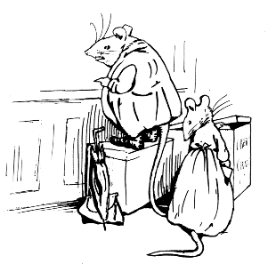
「それに アナ・マライア どうも しなもの まんびきしてる ―― あれだけの クラッカー どこいった？」
「てめえで たべたじゃねえか。」と かえす ジンジャー。
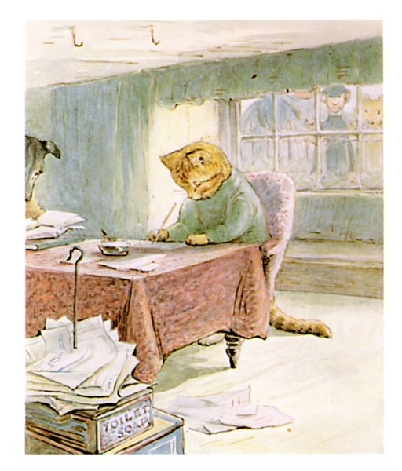
ジンジャーと ピクルスは おくのへやに さがりました。
ふたりは おかねの ではいりを しらべに しらべます。 すうじの れつを たしあわせて たしあわせて。
「ひげひげサミュエル ひげの ながさと おなじくれえ おかんじょう ためてやがる。 １０がつからで かぎタバコが ５０グラムもだぜ。」
「バター３キロと ふうろう１ぽんと マッチ４ほんで、 いくら？」
「また かたっぱしから おかんじょう おくりつけろ、 のしを つけてな。」と かえすのは ジンジャー。
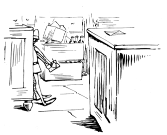
しばらくすると おみせから ものおと、 なにかが ドアから はいってきたみたいな かんじでした。 そこで おくのへやから でていくと、 カウンターのうえに ふうとうが ひとつ おかれていて、 そこでは おまわりさんが てちょうに なにか かきつけていまして！
ピクルスは ひきつけを おこさんばかりに、 ワンと ほえ、 ワンワンと ほえ、 さっと かけよります。
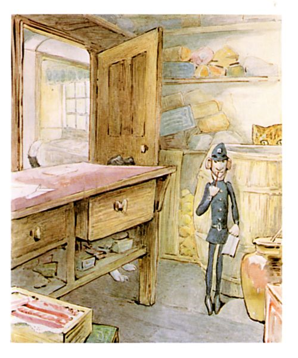
「かんじまえ、 ピクルス！ かんじまいな！」と おさとうの たるのうらから まくしたてる ジンジャー。「そんなの ただの ドイツにんぎょうだ！」
おまわりさんは てちょうに かくのを やめず、 ２ど えんぴつを くちに くわえて、 １どなんか それを とうみつに ひたしたりして。
ほえまくる ピクルスは ついに こえまで からします。 なのに おまわりさんは きに とめる そぶりさえ なく。 ビーズの めに ぬいつけられた ヘルメット。
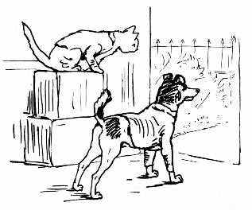
ようやく なんとか おもいきって とびかかった ピクルス ―― ところが おみせは もぬけのからで。 おまわりさんの すがたも ありません。
とはいえ ふうとうは そのまま。
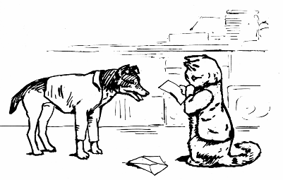
「どうおもう、 ほんものの おまわりさんの ひとを よびに もどったのかな？ それ もしかして よびだしの てがみ？」と ピクルス。
「ちがう。」と こたえるジンジャーは ふうとうを ひらいていまして。「ぜいきんだぜ、 ちほうと くにの。 おうどうか３まい はくどうか１９まい どうか３まいに せいどうか４まいだとさ。」
「とどめの いちげきか。」と ピクルス。「おみせを たたもう。」
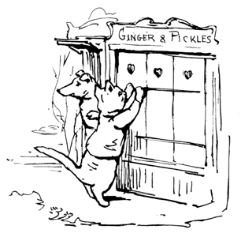
ふたりは シャッターを しめて でていきました。 といっても そこから とおくへ はなれてしまったわけでは ありません。 まあ もっと とおくへ いきやがれって こころで おもっていた むきも あるのですが。
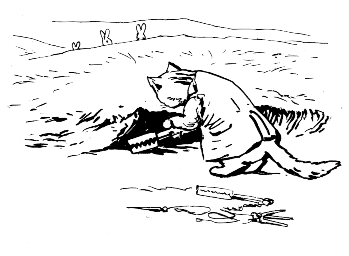
ジンジャーの いまの すまいは ウサギの すむような あなのあたり。 どんなしごとを やろうとしているのか わたしには わかりません。 なんだか ふとって しあわせそうですが。
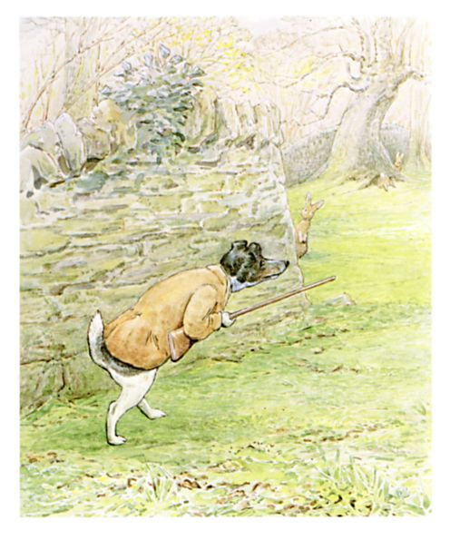
ピクルスは いま かりばの ばんにんを しています。
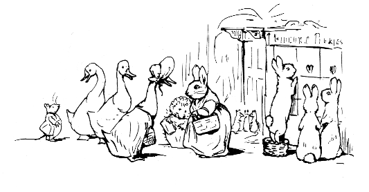
おみせが しまったことで たいへん ふべんに なりました。 ぐいぐいタビサは しなものを みんな ねあげしたうえ いままでどおり ツケを うけつけてはくれませんし。
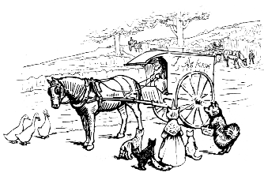
もちろん ものうりの にぐるまは まわってきます ―― おにくやさんに、 うおやさん、 それから ぱんやきティモシー。
でも 〈キャラウェイシード〉のパウンドケーキや スポンジケーキ、 バターロールパンだけでは なかなか いきてはゆけません ―― ティモシーが つくるほど おいしい スポンジで あってもです！

しばらくすると やまねずジョンさんと そのむすめさんが ペパーミントと ろうそくを うりはじめました。
ところが はかりうりを してくれません。 ですから １８センチの ろうそく１ぽん はこぶのに ハツカネズミ５ひきがかりで。
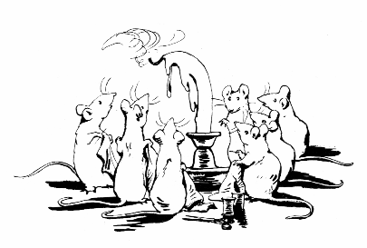
しかも ―― しなものの ろうそくは ぽかぽかした ひには おかしなことに なってしまって。
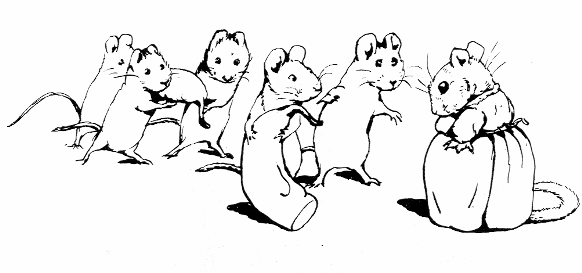
さらに やまねずの むすめさんからは きれはしの はらいもどしを こばまれて。 もんくを つけて しなものを つきかえそうとしたのに。
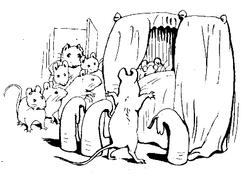
また もんくを いわれた やまねずジョンさんにしても ねたきりですから 「きもちええわ」としか いいそうになくて。 ものを うるどころでは ないかんじです。

ですから みんな よろこんだんです、 なんと へにぺにサリーが おみせを また ひらくつもりだって はりがみを だしたものですから ――〈へにぺに かいてん セール！ だいほりだしものいち！ へにぺに おおやすうり！ きた みた かった！〉
はりがみは ほんとうに こころおどるもので。
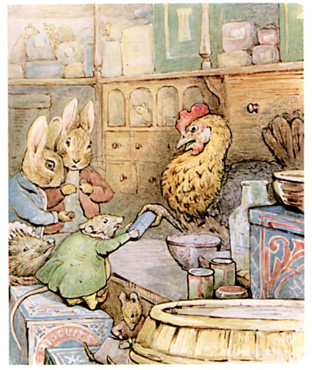
おみせの ひらく ひには みんな おしよせました。 おきゃくさんで ぎゅうぎゅう、 ハツカネズミが おおぜい ビスケットの かんに のっかったりして。
おつりを かぞえてみる へにぺにサリーは ちょっと あたま くらくら、 それでも げんきんで おしはらいを と いいはって、 なんというか まじめなかたなのです。
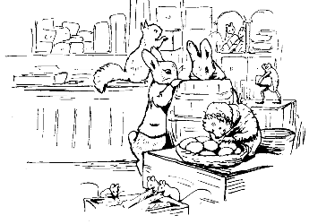
それからというもの いまでも ほりだしものの しなぞろえは ばっちり。
だれでも きにいるものが きっと みつかるわけです。
（おしまい）